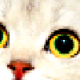
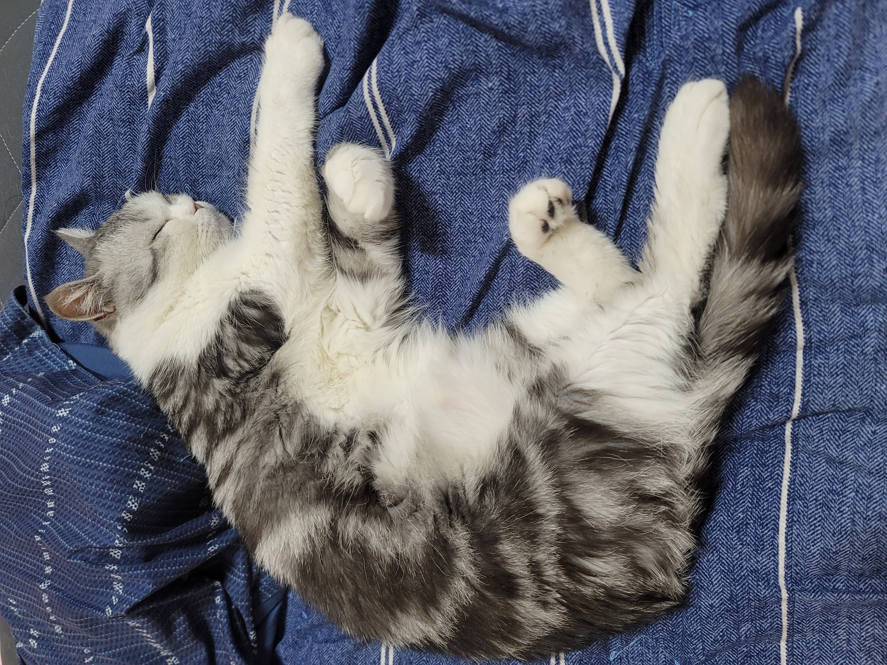
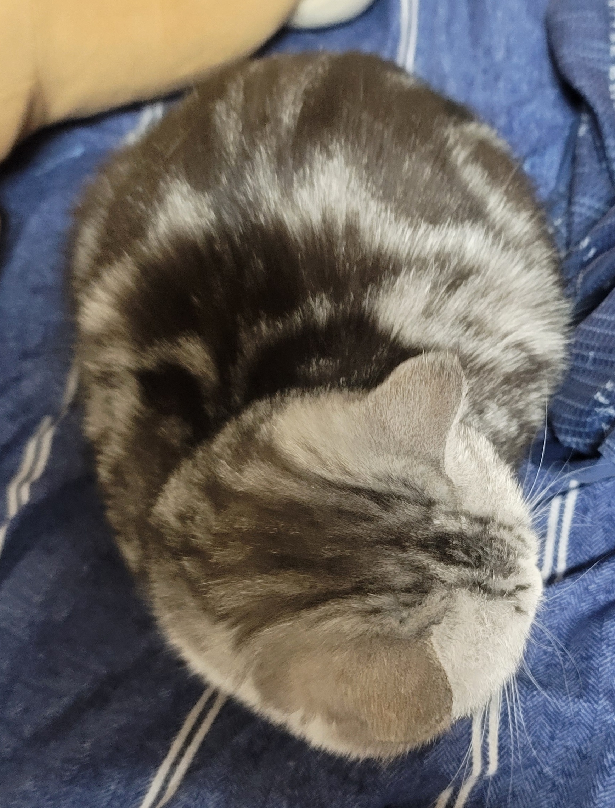
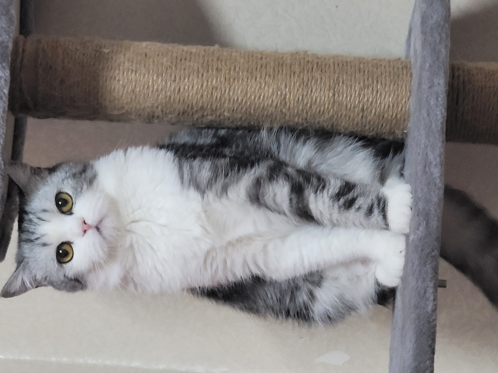
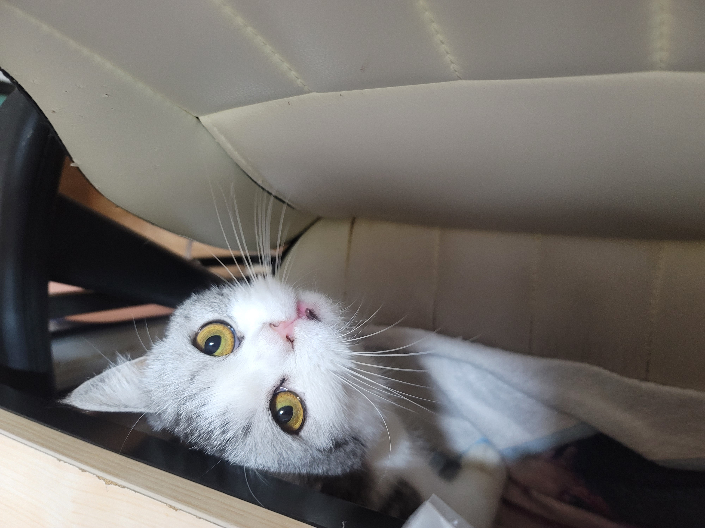
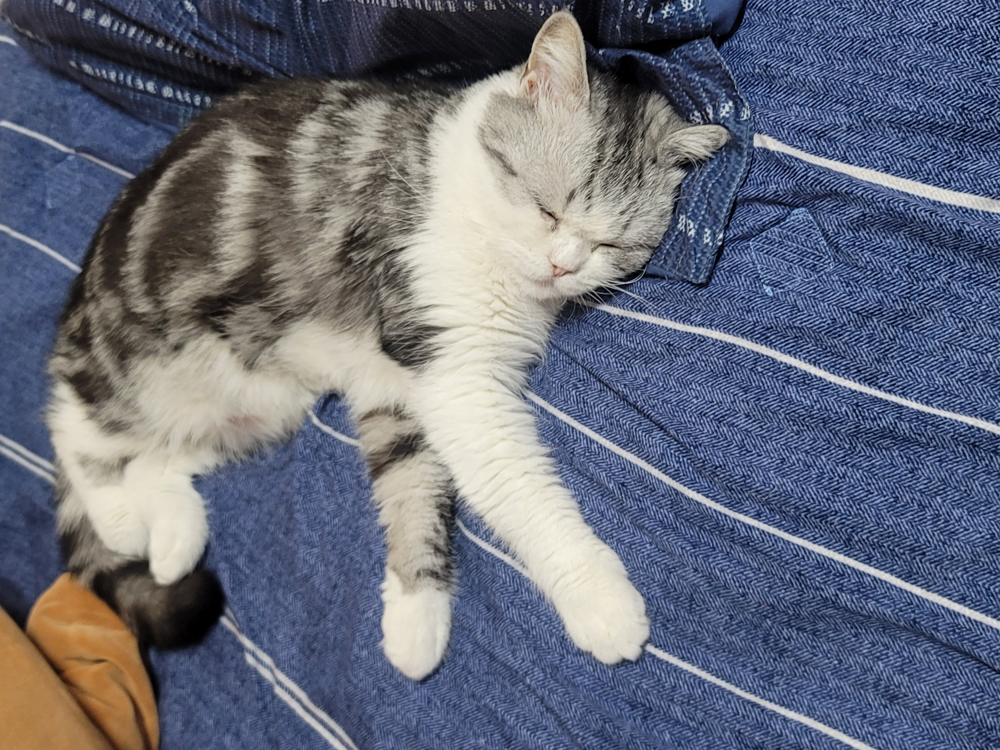
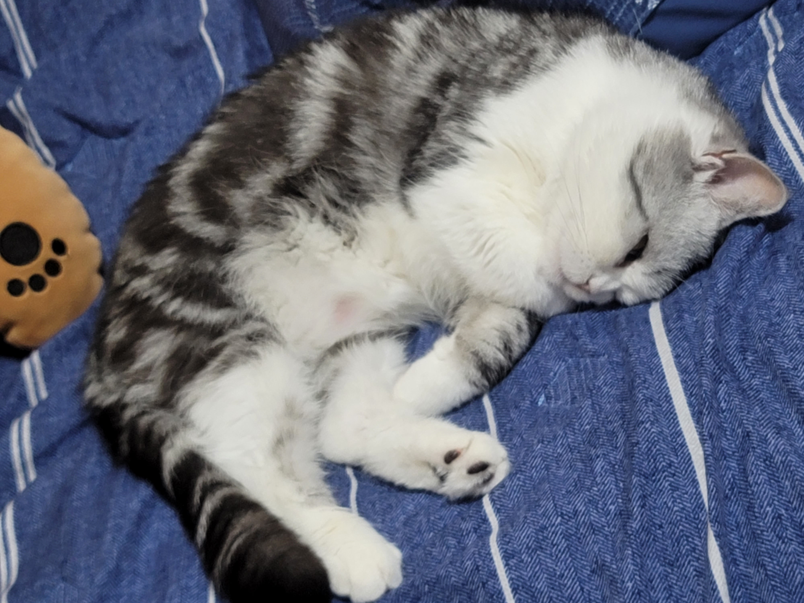

자기소개
이름: 유다은(99.09.18)
전공: 정보통신공학
주로 쓰던 언어: Python, MySQL
특이사항: 2월 졸업예정
대구에서 왔어요!
고양이 한 마리를 키우고 있어요!
하지만 지금은 본가에 맡겨두고 서울에 와서 자취중이라 못 보고 있는 상태... 
고양이 이름은 '하루' 이고 귀여운 브리티시 쇼트헤어 입니다!
MBTI: INTJ
깃허브
  
  